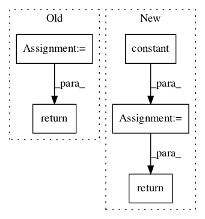

f5ef1717933abb45db9669a724a6a4404818375b,basenji/metrics.py,StochasticReverseComplement,call,#StochasticReverseComplement#Any#,127

Before Change
Stochastically reverse complement a one hot encoded DNA sequence.
rc_seq_1hot = tf.gather(seq_1hot, [3, 2, 1, 0], axis=-1)
rc_seq_1hot = tf.reverse(rc_seq_1hot, axis=[1])
reverse_bool = tf.random_uniform(shape=[]) > 0.5
src_seq_1hot = tf.cond(reverse_bool, lambda: rc_seq_1hot, lambda: seq_1hot)
return src_seq_1hot, reverse_bool
class SwitchReverse(tf.keras.layers.Layer):
def __init__(self):
super(SwitchReverse, self).__init__()
After Change
pred_mean = tf.divide(self._pred_sum, self._count)
pred_mean2 = tf.math.square(pred_mean)
term1 = self._product
term2 = -tf.multiply(true_mean, self._pred_sum)
term3 = -tf.multiply(pred_mean, self._true_sum)
term4 = tf.multiply(self._count, tf.multiply(true_mean, pred_mean))
covariance = term1 + term2 + term3 + term4
true_var = self._true_sumsq - tf.multiply(self._count, true_mean2)
In pattern: SUPERPATTERN
Frequency: 3
Non-data size: 5
Instances
Project Name: calico/basenji
Commit Name: f5ef1717933abb45db9669a724a6a4404818375b
Time:
Author: null
File Name: basenji/metrics.py
Class Name: StochasticReverseComplement
Method Name: call
Project Name: reinforceio/tensorforce
Commit Name: a3fe8bdf1c484e390dfe3947cc395372c0187589
Time:
Author: null
File Name: tensorforce/core/distributions/beta.py
Class Name: Beta
Method Name: tf_sample
Project Name: tensorflow/agents
Commit Name: a3b5ba44826094feb3f9f02265c416045f59aa08
Time:
Author: null
File Name: tf_agents/bandits/policies/policy_utilities.py
Class Name:
Method Name: masked_argmax